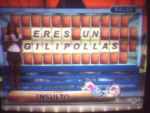

La ruleta de la suerte
 De: La Frikipedia, la enciclopedia extremadamente seria.
De: La Frikipedia, la enciclopedia extremadamente seria.
Típicos marcadores de los concursantes al final del programa, que luego, con lo que va pa Hacienda y el porcentaje para una ONG, casi es mejor no venir al programa...
Famoso programa de antena3 que básicamente sirve para que las abuelas pasen mejor el rato cosiendo y para que un puñao de impresionables adolescentes con poco futuro académico se coman los mocos esperando a que empiecen los Simpsons. Suele colarse en tu televisor en el momento en que no estás atento; a esas horas cuando ya casi vas a comer y te has ido a echar una meadita o un gapo por la ventana.
¿Cómo se juega?
Jorgito torturando a los ruleteros al tiempo que le guiña el ojo al de amarillo.
 ¡Pa que luego digan que no admiran a su audiencia!

San Bocata Calamares que dan en la Ruleta para
drogar mimar al público pa que anime
Existen 3 payasos jugadores, cuyas características expondremos más adelante.
La ruleta, objeto no muy importante para el juego, dado que es una burda patraña, se compone de diferentes casillas expuestas a continuación:
- Quiebras: Afortunadamente sólo hay 2, ya que de haber más las probabilidades de caer en una de ellas pasarían de un 99% a un 358%. Son las más temidas por los concursantes, puesto que, salvo por algún pringao que va al programa sólo para babearle encima a la que da la vuelta a las letras(si, que no se hagan los remolones...), todos quieren llevarse algo de dinero.
- Pierde Turno: También hay 2, gracias a la Virgen María, su papel es según la dirección del juego, hacer el programa más ameno, nos ha jodido!
- Premio: no se confundan, más que un premio dan un motivo más para suicidarse. Si aciertas la letra que digas, obvio, la podrás dar la vuelta. Podrás encontrar cosas desde un vaciador de melones hasta un MP2 del año de la pera que no tiene capacidad ni pa un par de canciones de Rafael. Los concursantes suelen temer más a esta casilla que al pierde turno.
- Propaganda: Bueno, pues que son mu listos, no se crean ustedes que no, como ven que tienen toda la audiencia de los jubilaos en los asilos (en España unos 56 millones) pues se han metido a hacer merchandaising de marcas tipo la Cartuja de Sevilla, Ediciones el Prado o de Colchones Lo Mónaco, que se ponen a regalar joyas, bisutería, platos...y dios sabe qué, con tal de llamar a un sitio dejándote en una llamada de 2 minutejos el sueldo de varios meses.
- Las de dinero: Suelen escasear. Normalmente si caes y das con una letra del panel te llevas la pasta, pero tienes que tener la suerte de resolver el panel en el momento adecuado para llevártelo todo así que vamos a hacer como si no existiesen.
- El bote: Los muy cabroncetes la ponen al lao de la quiebra. Si caes ahí y resuelves te lo llevas todo, si es que llevabas algo. Encima los muy insufladores de aire por uretra que han diseñado el programa sólo lo han puesto para un sólo panel, lo que demuestra que los de esta cadena no tienen ni pa bollos. El presentador siempre suele dar pistas orientativas a los concursantes sobre la posición de esta casilla para que no acierten nunca.
Por otro lado tenemos el "Panel del Espectador" donde cada día pican más y más jubilaos que luego se quejan de que les dan poca pensión.
Finalmente, a aquél que gana más leros le dan la oportunidad de jugar en un panel trucao donde los sobres de la ruleta tienen 2 tarjetas. Una buena, con el coche o 5000€ para cuando el concursante falla y una de cuatro duros para las escasas veces que aciertan, por lo que el coche del premio final acaba con más telarañas que el cepillo de dientes de Ronaldinho.
Concursantes
El principal criterio de selección de concursantes es no tener el graduado en primaria y tener un coeficiente intelectual bajísimo.
Lo más curioso y enigmático de este concurso es la cantidad de dinero (poca, normalmente) que se llevan los concursantes, que siempre suele ser la misma dependiendo de su ubicación.
- El azul: A la izquierda, suele ser el tío listo que tiene más chorra que una manguera y que no cae en un pierde turno/quiebra ni colocando la ruleta. Suele llevarse, sin contar si pasa a la última fase, entre 2000-3000 leros.
- El rojo: Es de sexo indiferente y previamente le ha hecho favores sexuales al presentador, a la tía que pulsa en el panel, a la administración del programa, directivos, departamento de marketing de Danpena 3, a los demás concursantes y a los del público que cantan su nombre.
Suele ser más bien feo/a pero eso, a los de esta cadena controlada por el PaCo, les da igual. Su premio oscila entre los 5000 y los 8 000 leros más luego las propinas que se lleva el mu chulo al salir de los estudios.
- El amarillo: Es la típica ama de casa que no se entera ni siquiera cuando el presentador le regala un guiño, una sonrisa comprometedora...y que por supuesto no se sabe las reglas, diseñadas para subnormales y no más, del programa. Gana entre 0 y 25€.
Perfiles de concursantes
- Típica tía güena. El presentador que tiene la virtud de poder mirar hacia dos objetivos que estén en un angulo diferente, le tira los tejos y hace que el juego se haga pesado y la espera para ver los Simpsons sea mucho más larga.
- Típico chico/a del pueblo. que se crió entre ovejas.
- Típica abuelita que se cree guay. No tiene gracia.
El Público
El público de este programa que va a los estudios de Antena 3 sólo por el bocata de calamares que les dan, es posiblemente el mejor de toda la televisión del mundo.
Destaca por su coherencia a la hora de animar/gritar/decir paridas. Entre sus "grititos de guerra" destacan:
- "Si no resuelves tú resuelvo yooooooo...lalalala..." Mientras se comen el bocata de calamares.
- "Tira de la ruletaaaa...de la ruletaa tira yaaa..." Cancioncita que tararean, curiosamente, cuando el concursante en cuestión ya tiró de la ruleta.
- "¡Resuelve! ¡Resuelve! ¡ Qué resuelvas ya, hombre!" Cuando el concursante está mu tonto y le queda una palabra en todo el panel y aún así no se da cuenta de lo que pone.
- "¡Bravo! ¡Bravo!" Cuando un concursante al que odian cae a la quiebra. Generalmente es el tío del pueblo.
- "¡Ohhhhhhhh!" Lo dicen cuando el concursante cae en una quiebra o pierde turno, o por lo menos eso creeen ellos, porque la mitad de las veces no es así y queda el ambiente un tanto confuso.
- "90..422 4321..3334..123892" Cuando el presentador les pide que digan el número de Tlf. del programa, que por supuesto, sólo uno o dos se lo saben y empiezan a decir por cada lao una serie de dígitos que no vienen a cuento.
- " HHHHHHH!!(sonidos guturales)" Púbico enfervorecido al ver que el concursante a caído en la casilla del BOTE..pero no tiene ni puta idea de la respuesta.
- ¡Un poquito más duro!¡Un poquito más duro!- Cuando el concursante tira con menos fuerza que el pedo de un marica
- La ruleta de la suerte, a dado un giro a dado dos a dado tres - Cuando ya no saben que coñ* mandar para animar un poco el cotarro
- UEEEEEEEE!!! - El público hace la ola cuando casualmente la ruleta cae en "Obegras", es cuando el plató se inunda de un intenso olor a sobaco
- Dale a tu cuerpo alegría a la ruleta que tu cuerpo es pa darle alegría a la ruleta,dale a tu cuerpo alegría a la ruleta...eeeeeeh la ruleta, AAAI! - Sin sentido lógico alguno
- eh! eh! eh! eh! eh! eh - Gritos de guerra
- AAAAAAAAANNNNNNNNNNSIIIIIIIIIIAAAAAAAA - Grito ensordecedor hacia el concursante que se atreve a resolver sin saber, o lanzarse a tirar para ganar mas dinero
- COMODÍN! COMODÍN! COMODÍN! COMODÍN! - Cuando toca comodín
- Tira! levanta! levanta! tira! levanta! tira! tira! - Cada uno a su rollo, si el concursante hace caso al público probablemente se vuelva loco
- Resuelveee! tira! levanta! tira! resuelve! tira! levanta! - Nivel II del "tira-levanta", si el concursante consigue pasar de estos gritos, quizás consiga 100 euros.
- Se nota! Se siente! EL BOTE ESTÁ PRESENTE! - Para cuando el jugador se acerca al Bote, momento de máximo clímax.
Presentador
El chaval este que lo presenta es algo así como el héroe del Cillit Bang, que tiene locas a las mujeres, lástima para él que sean sólo las que han entrado ya en avanzado estado de descomposición la tercera edad.
Al parecer, ganó de pequeño algún concurso de belleza vestido de Action Man.(si es que ya destacaba cuando era mocoso y todo)
En el programa ná más que se dedica a hacerles la vida imposible a los concursantes, tapando su deseo de que pierdan con frases tan bonicas como:
- "Ánimo, media vuelta y caes en el bote". que utiliza para mentir a los jugadores invidentes que no ven que en realidad ya han caído en dicha casilla y tendrían que haberse llevao una pasta que les daría hasta pa forrar las paredes de la casa.
- "De verdad, que me has caído genial y que eres una gran persona. Me da pena de que te hayas ido con 0 euritos...Ooohh!" La emplea con una media de entre 1 y 2 veces por programa.
- "Vayaaa...ha sido la vigesimocuarta quiebra seguida en la que caes...que lástima. No te preocupes que al final los últimos serán los primeros; este juego es imprevisible y, hasta el último momento nada está decidido". eso no te lo crees ni tú, chato.
Objetivo
El que podría ser el principal objetivo de una persona al ir a esta basura televisiva sería llevarse el coche, que es más feo aún que el logo de Safari, pero claro, en el último panel, después de aguantar una sesión interminable de torturas con Jorgito, cuando te toca el sobre donde está dicho premio, da la casualidad de que no eres capaz de sacar el panel, en parte porque puedes tener mal el cerebro(de ahí se entiende que hayas ido al programa), o también porque apenas te dejan 10 segundos para resolverlo, otra muestra de la buena voluntad de la cadena porque te lleves algo.
Este concurso se dedica a intentar dominar el mundo a través del control mental de las marujas que lo ven, causar en sus concursantes y telespectadores graves crisis de ansiedad, aumentar sus ganas de suicidarse y provocar desprendieminetos de masa gris del cerebro así como derretimiento de neuronas y graves quemaduras en las retinas.
También hay una conspiración judeo-masónica-comunista que nos invita a pensar que en realidad es un programa hacido hecho por y para Hacienda.
Videos
Ejemplo tristísimo de cómo NO resolver bien un panel. Si es que lo hacen difícil y todo....
Análisis por Loquendo.
Otra de Loquendo, más corto y menos salidillo.
Autor(es):
- Nexo
- Chubaca
- Sethiric
- Azulejos
- Nadaquever
- Popi fresh
- Peich
- Pollo89
Frikipedia 2005-2016, Licencia
GFDL 1.2 - Extraído por FrikiLeaks